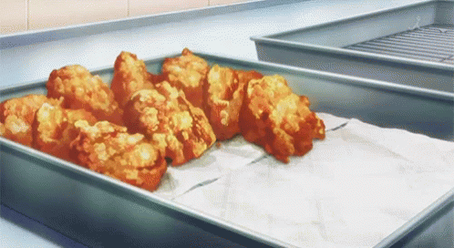

Chicken Karaage

Could serve as a starter of this meal
This is a simple yet delicious Japanese-style fried chicken flavored with ginger, garlic and sake and soy sauce. Serve as an appetizer or with rice and veggies to make a yummy meal. It even tastes good cold
- I N G R E D I E N T S -
- 2 tablespoons soy sauce
- 1 tablespoon sake (Japanese rice wine)
- 2 teaspoons grated fresh ginger
- 1 ½ pounds boneless, skinless chicken breasts, cut into bite-size pieces
- 2 cups vegetable oil for frying
- ¾ cup cornstarch
- I N S T R U C T I O N S -
- Combine soy sauce, sake, and ginger in a large bowl. Add chicken; turn to coat. Cover with plastic wrap and let marinate in the refrigerator, about 30 minutes.
- Heat oil in a deep-fryer or large saucepan to 350 degrees F (175 degrees C).
- Place cornstarch in a large resealable plastic bag. Add chicken; seal bag and toss until chicken is coated with cornstarch.
- Fry chicken in batches until juices run clear and it is golden brown, 2 to 3 minutes. Drain on paper towels or on a wire rack.